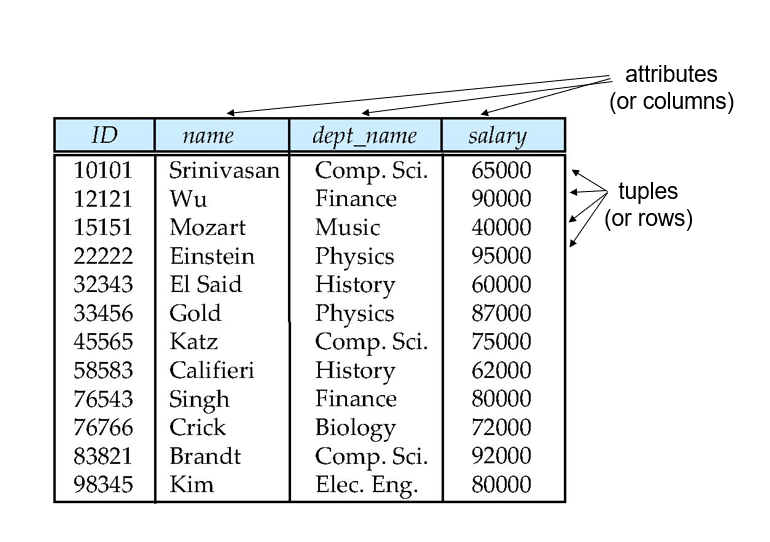
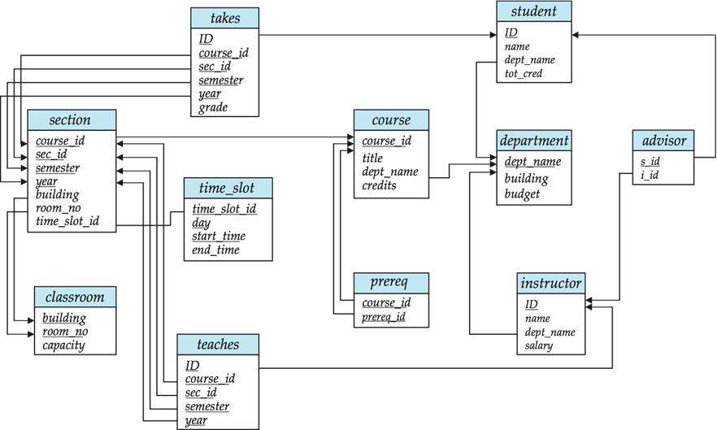
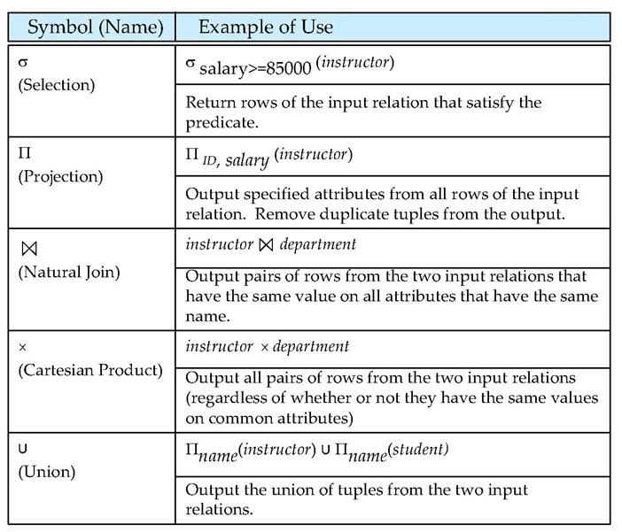

数据库系统概念2
本文最后更新于：a year ago
关系模型
关系数据库结构
关系型数据库：是指采用了关系模型来组织数据的数据库，其以行和列的形式存储数据，以便于用户理解，关系型数据库这一系列的行和列被称为表，一组表组成了数据库。
表：关系型数据库这一系列的行和列被称为表
行(row)：一组值的序列。又称为元组(tuple)、数据库记录(record)
列(column)：表中的一个字段、属性(attribute)，所有表由多个列组成
域：对于关系的每个属性，都存在一个允许取值的范围，为该值的域
原子的(atomic)：如果域中的单元被看作是不可分的单元，则这个域就是原子的
空值(null)：表示值未知或者不存在

关系：我们使用关系来指代表。（对应于“变量”）
关系模式：由属性序列及各属性对应域组成。（对应于“数据类型”）
关系实例：一个关系的特定实例
码/键
超码(superkey)：是一个或多个属性的集合，可以在一个关系中唯一地标识一个元组
候选码(candidate key)：超码的任意真子集都不能成为超码，这样的最小超码称为候选码
主码/主键(primary key)：被DB设计者选中的，用于区分不同元组的候选码。通常把一个关系模式的主码属性列在最前面。
主码在一个关系中只能有一个（选定的一个）,但主码中的属性可以有多个,叫联合主码。规定主码的值不能为空(null)！
外码(foreign key)：一个关系模式r1它的属性中包含另一个关系模式r2中的主码。则这个属性称为外码；r1称为外码依赖的参照关系(referencing relation)；r2称为外码依赖的被参照关系(referenced relation)。简单来说，就是r1参照r2嘛~
保持数据一致性，完整性，使两张表形成关联，所以外键只能引用外表中的列的值或使用空值。
参照完整性约束：数据库的参照完整性是指表与表之间的一种对应关系，通常情况下可以通过设置两表之间的主键、外键关系，或者编写两表的触发器来实现。 有对应参照完整性的两张表格，在对他们进行数据插入、更新、删除的过程中，系统都会将被修改表格与另一张对应表格进行对照，从而阻止一些不正确的数据的操作。
模式图
一个含有主码和外码依赖的数据库模式可以用模式图来表示。
箭头的含义：简单来说就是A表的外键指向B表的主键。表明参照关系。
关系运算
[扩展]关系运算的latex语法
| Operation | 中文 | 符号 | LATEXLATEX |
|---|---|---|---|
| Projection | 投影 | $\Pi$ | \Pi |
| Selection | 选择 | $\sigma$ | \sigma |
| Renaming | 重命名 | $\rho$ | \rho |
| Aggregate Function | 聚合函数 | $\mathcal{G}$ | \mathcal{G} |
| Union | 交 | $\cap$ | \cap |
| Intersection | 补 | $\cup$ | \cup |
| Natural Join | 自然连接 | $\bowtie$ | \bowtie |
| Left Outer Join | 左外连接 | ⟕ | … 这几个直接复制吧 |
| Right Outer Join | 右外连接 | ⟖ | |
| Full Outer Join | 全外连接 | ⟗ | |
| Cartesian product | 笛卡尔乘积 | $\times$ | \times |
| Divide | 除 | $\div$ | \div |
| Assignment | 赋值 | $\leftarrow$ | \leftarrow |
| And | 条件并列 | $\land$ | \land or \vee |
| Negation | 非 | $\neg$ | \neg |
| Exist | 存在 | $\exists$ | \exists |
| For All | 对所有 | $\forall$ | \forall |
| 长长长长括号 | $\big( \Big( \bigg( \Bigg($ | \big( \Big( \bigg( \Bigg( |
|
| 比较 | $\gt \ge \lt \le \ne$ | \gt \ge \lt \le \ne |
参考资料
[1]https://billc.io/2020/04/latex-relational-algebra/
[2]《数据库系统概念》第六版
本博客所有文章除特别声明外，均采用 CC BY-SA 4.0 协议 ，转载请注明出处！